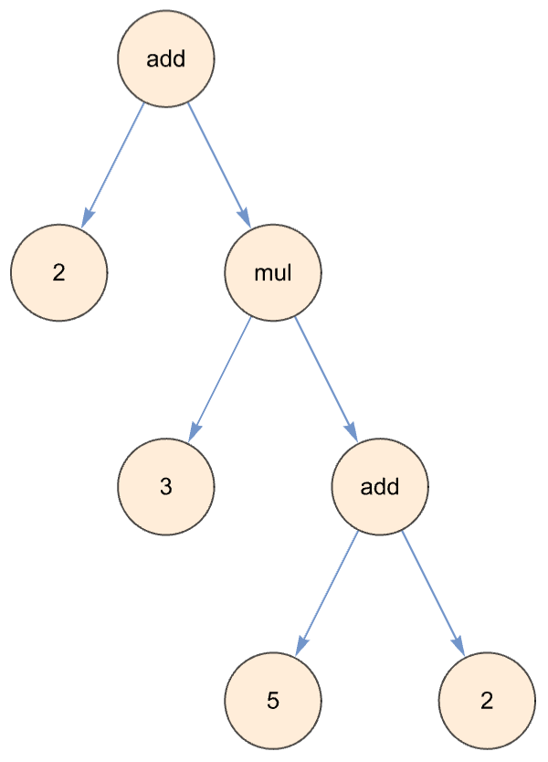
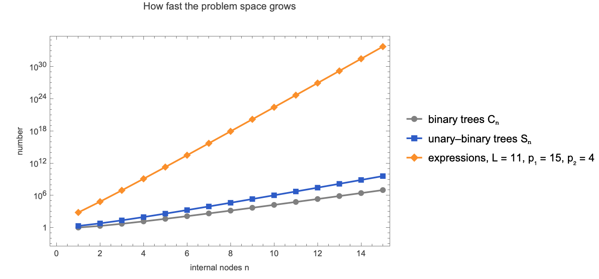
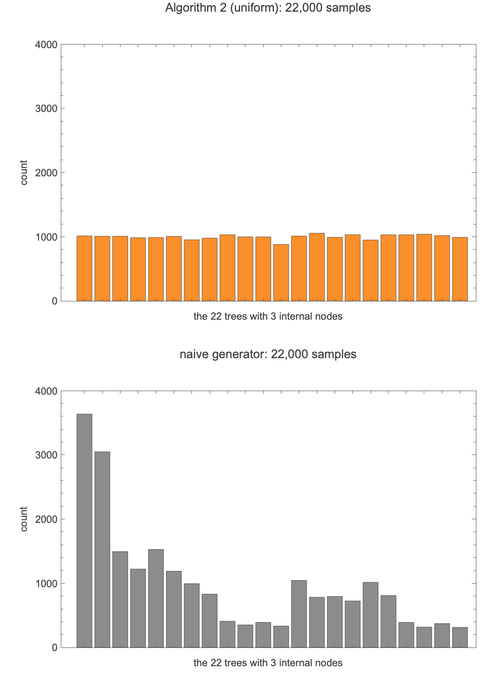

24 November 2026 · Computational Classnotes · TensorNets units of learning, 2 of 4
A neural net can learn to integrate if integration is written as
translation: the problem is one sequence and its solution is another.
Lample and Charton (2019) trained a standard transformer this way, and
what was new was the data. This unit builds their data machinery: trees
in prefix notation, fair sampling of trees, three ways of making
integration problems, and a check on every answer. Counting the trees
also turns up a slip in the paper’s Equation 2. The notebook
unit2_symbolic_data.nb has the same section numbers and
computes every number quoted here.
\[FormalX], shown as a dotted x.An expression is a tree, and its prefix sequence is the tree read node first.

Fig. 1. The tree of 2 + 3 × (5 + 2). Read node
first, then the children from left to right, it gives the prefix
sequence add 2 mul 3 add 5 2 (§3).
Write a problem as a sequence of symbols and its solution as another. A sequence-to-sequence model (Units 1 and 3) can then learn to map one to the other. For integration the problem is f, and the solution is a function F with F′ = f.
Three things are needed: a way to write expressions as sequences (§3), a supply of correct problem–solution pairs (§4–§6), and a way to check what the model writes (§7).
Prefix (Polish) notation writes each node before its children. Every
symbol has a fixed arity: add,
sub, mul, div and
pow take two arguments; exp, log,
sin and cos take one; numbers and x take none.
So prefix needs no parentheses, and trees and prefix sequences
correspond one to one (Section 2.1).
Worked by hand. Keep a counter of subtrees still
owed, starting at 1. Each symbol fills one slot and opens as many as its
arity, so the counter changes by arity − 1. For
add 2 mul 3 add 5 2 it runs 1 → 2 → 1 → 2 → 1 → 2 → 1 → 0.
It reaches 0 exactly at the last token, so the sequence is one complete
tree. It has 7 tokens, against 9 for the infix form
2 + 3 × ( 5 + 2 ).
A sequence is a valid tree exactly when the counter stays positive
until the last token and ends at 0. An integer is a sign token followed
by its digits: −305 is INT- 3 0 5. Ten digits and two signs
cover every integer.
Checked (notebook §3): the counter is {1, 2, 1, 2,
1, 2, 1, 0}. add x INT+ 3 is valid; add x,
add x x x and INT+ alone are not. −305 ↔︎
INT- 3 0 5 and 12 → INT+ 1 2. Prefix and back
returns the same expression for three examples and for all 276
well-formed random expressions of 300 drawn.
To sample fairly one must first count. The first empty slot of a tree is a leaf, a unary node or a binary node (Appendix C):
D(1, n) counts whole trees with n internal nodes. With binary nodes only, the middle term is dropped and D(1, n) = Cₙ. With unary and binary nodes it is the large Schröder number Sₙ, which satisfies the paper’s Equation 1, (n + 1)Sₙ = 3(2n − 1)Sₙ₋₁ − (n − 2)Sₙ₋₂.
Worked by hand. The trees with two internal nodes are u u •, u b • •, b u • •, b • u •, b b • • • and b • b • •, so S₂ = 6. By the recurrence, D(1, 2) = D(0, 2) + D(1, 1) + D(2, 1) = 0 + 2 + 4 = 6. Here D(1, 1) = 2 (u • and b • •), and D(2, 1) = D(1, 1) + D(2, 0) + D(3, 0) = 2 + 1 + 1 = 4.
Counting expressions, and a correction. An expression is a tree whose leaves take one of L values, unary nodes one of p₁ operators and binary nodes one of p₂. So each tree counts L^leaves p₁^unary p₂^binary times, and the total Eₙ satisfies E(z) = L + p₁zE(z) + p₂zE(z)². The paper’s Equation 2, as printed, ends in −p₁(n − 2)Eₙ₋₂. Expanding the square root gives
so the last coefficient is p₁², not p₁. Appendix B writes p₁z² for the last term, and the p₁ carries into Equation 2. The corrected recurrence is
The two forms agree when p₁ is 0 or 1, the cases the paper checks against Equation 1 and the Catalan numbers.

Fig. 2. The number of binary trees, unary–binary trees and expressions with n internal nodes, on a log scale. With the paper’s 11 leaves, 15 unary and 4 binary operators there are about 5.4 × 10³³ expressions with 15 internal nodes.
Checked (notebook §4): the six trees, with D(1, 2) = 6, D(1, 1) = 2 and D(2, 1) = 4. D(1, n) equals Cₙ (binary) and Sₙ (unary–binary) for n ≤ 12, and the number of trees listed one by one for n ≤ 7. For L = 4, p₁ = 3, p₂ = 2 the corrected Equation 2 equals the count of every tree for n ≤ 6. The printed form agrees at n = 2 and first differs at n = 3 (19 822 against the true 19 756). With p₁ = 1 the printed form is right for n ≤ 10. For the paper’s settings, E₁₅ = 5.43 × 10³³.
A naive recursive generator picks binary or unary with fixed probabilities, then splits the remaining nodes at random. It favours some shapes. The paper samples every tree with n internal nodes equally often. Start with one empty slot, e = 1, and choose the position k and arity a of the next internal node with
The k slots before it become leaves. Then e becomes e − k (unary) or e − k + 1 (binary), and n falls by 1 (Appendix C, Algorithm 2). With binary nodes only, the same idea is Algorithm 1.
Worked by hand (n = 2). With e = 1 only k = 0 is possible. P(0, unary) = D(1, 1)/D(1, 2) = 2/6 = 1/3, and P(0, binary) = D(2, 1)/D(1, 2) = 4/6 = 2/3. Of the six trees in §4, two start with u and four with b. A fair first choice is exactly the fraction of trees that start that way.

Fig. 3. Counts of the 22 trees with three internal nodes in 22 000 samples. The paper’s algorithm gives each about 1000. The naive generator gives the most common shape 3637 times and the rarest 314.
Checked (notebook §5): the first-step weights are 2 and 4 out of 6. Algorithm 2 produces all 22 trees and is consistent with uniform (χ² p-value above 0.001); the naive generator is not (p below 10⁻⁶). Algorithm 1 is uniform over the 14 binary trees with four internal nodes.
Worked by hand. Take F = x and G = sin x, so FG′ = x cos x. The known integral needed is ∫ sin x dx = −cos x. So ∫ x cos x dx = x sin x + cos x. Differentiating gives sin x + x cos x − sin x = x cos x.
Differentiation lengthens expressions. So in BWD data the problem is usually longer than its solution, and in FWD data the reverse. The paper notes that a model trained only on BWD data learns that integration shortens expressions, which FWD data contradicts (Section 3, Table 1).
| Method | Pairs | Mean problem length | Mean solution length |
|---|---|---|---|
| FWD | 30 | 7.07 | 12.7 |
| BWD | 60 | 8.33 | 7.13 |
Checked (notebook §6): every FWD and BWD pair is
correct, by differentiation, and BWD problems are longer than their
solutions on average (True, True, True). Three rounds of IBP over the
BWD pairs of x, x², x³, sin x, cos x and eˣ found 9 new pairs, all
correct, without calling Integrate. Among them is ±x³ sin
x, whose integral, −x³ cos x + 3x² sin x + 6x cos x − 6 sin x, is the
paper’s example of a solution that random generation would almost never
produce.
Nothing stops a decoder from writing an invalid prefix sequence, and such hypotheses are thrown away. An integral can be checked by differentiating it. So the paper checks every hypothesis in the beam, not only the most likely one. “Beam size 10” means that at least one of the ten hypotheses was correct (Section 4.4). A constant of integration does not matter.
Checked (notebook §7): for ∫ x cos x dx, the
hypotheses x sin x + cos x and x sin x + cos x + 3 are accepted; x sin x
and the unfinished sequence add mul x sin are rejected
({True, True, False, False}).
Answers (notebook §8): (1)
pow add INT+ 1 x INT+ 2; the counter runs 1, 2, 3, 2, 1, 0,
the digits counting as part of their integer. (2) D(1, 3) = D(1, 2) +
D(2, 2) = 6 + 16 = 22. (3) The corrected form gives 352, which equals
the count; the printed form gives 356. (4) D(2, 2)/D(1, 3) = 16/22 =
8/11. (5) x eˣ − eˣ, whose derivative is x eˣ.
Mathematics becomes data in three steps. Expressions are written as trees in prefix notation, which is short, needs no parentheses and can be read back with a single counter. Trees are sampled uniformly by counting how many ways each choice can be completed. Correct pairs come from differentiating (BWD) and from integration by parts (IBP), with no computer algebra system. Because an answer can be checked, the model need not be trusted: every hypothesis in the beam is verified.
Next, Unit 3 builds the transformer that learns from such data, and Unit 4 uses all of this on ⨂/⨁ expressions.
| Notebook § | Quantity | Value returned by the kernel |
|---|---|---|
| 3 | counter for add 2 mul 3 add 5 2 |
{1, 2, 1, 2, 1, 2, 1, 0} |
| 3 | validity of four sequences | True, False, False, False |
| 3 | prefix and back: 3 examples, random expressions | True; 276 of 276 |
| 4 | D(1, 2), D(1, 1), D(2, 1) | 6, 2, 4 |
| 4 | D(1, n) = Cₙ, = Sₙ (n ≤ 12), = listed trees (n ≤ 7) | True, True, True |
| 4 | corrected Eq. 2 = count; printed form = count at n = 2, ≠ at n = 3; printed right for p₁ = 1 | True, True, True, True |
| 4 | E₁₅ for L = 11, p₁ = 15, p₂ = 4 | 5.43 × 10³³ |
| 5 | uniform sampler: all 22 trees, χ² p > 0.001; naive p < 10⁻⁶ | True, True, True |
| 5 | naive sampler: rarest and commonest counts | 314, 3637 |
| 5 | Algorithm 1 on 14 binary trees | True, True |
| 6 | FWD, BWD correct; BWD problems longer | True, True, True |
| 6 | IBP: new pairs, all correct, includes x³ sin x | 9, True, True |
| 7 | four hypotheses for ∫ x cos x | True, True, False, False |
| 8 | E₃ corrected / printed / counted (L = 2, p₁ = 2, p₂ = 1) | 352 / 356 / 352 |
All 26 outputs of the notebook agree with the values above; the notebook ran with no messages.
Items marked † were not opened for this unit; their links were not checked.
The paper and its follow-ups
Counting and sampling trees
Symbolic integration
Wolfram Language
D, Integrate, Simplify,
\[FormalX]. Wolfram Language Documentation, reference.wolfram.com.
†© Computational Classnotes · CC BY-NC-SA 4.0